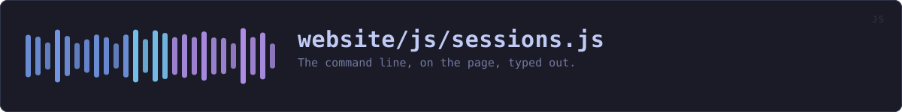

website/js/sessions.js
the website's source · 219 lines · read it on GitHub
WHAT IT DOES
The command line, on the page, typed out.
# What this plays, and why it is not a drawing
Five recordings of the real programs: the bytes veilvoice wrote on a real terminal, with the passphrases typed at the real prompts. tools/shots/ sessions.py records them into assets/screenshots/session-*.txt and tools/site/demo.py turns those into window.VEILVOICE_DEMO.sessions, which CI regenerates and compares. Nothing here is written by hand, so nothing here can quietly stop matching the program.
The one invented thing is the pacing. A session that arrives all at once is a paste rather than a session, so the typing is played at about the speed somebody types and the output at about the speed a terminal fills. That is the whole of the fiction and it is stated here rather than implied.
# What used to be here instead
A hand-built model of the desktop application, drawn in CSS, opened from a button as an overlay over whichever page the reader was on. It responded to clicks and it was a drawing: the device names, the levels and the panels were all written by hand, and it veiled no audio. It was labelled as a drawing, and a label is a weaker thing than not needing one.
It was also redundant. The real window is photographed on every build, nine captures, one per screen, and those are on this page too. Offering a reader a drawing of an interface and photographs of the same interface asks them to work out which one to believe, on a site whose argument is that they should not have to take anybody's word for anything.
So the drawing is gone and this is what replaced it: the recordings, on the page rather than behind a button, above the photographs of the window.
IN PLAIN WORDS
Plays back real terminal sessions at typing speed, so you can see what the program actually prints without installing it.
WHAT CALLS WHAT
Read out of the source: an edge means the callee’s name appears, called, inside the caller’s body. A syntactic reading, not a resolved one.
| Function | Line |
|---|---|
el | 51 |
still | 58 |
stop | 104 |
whole | 108 |
mark | 114 |
play | 124 |